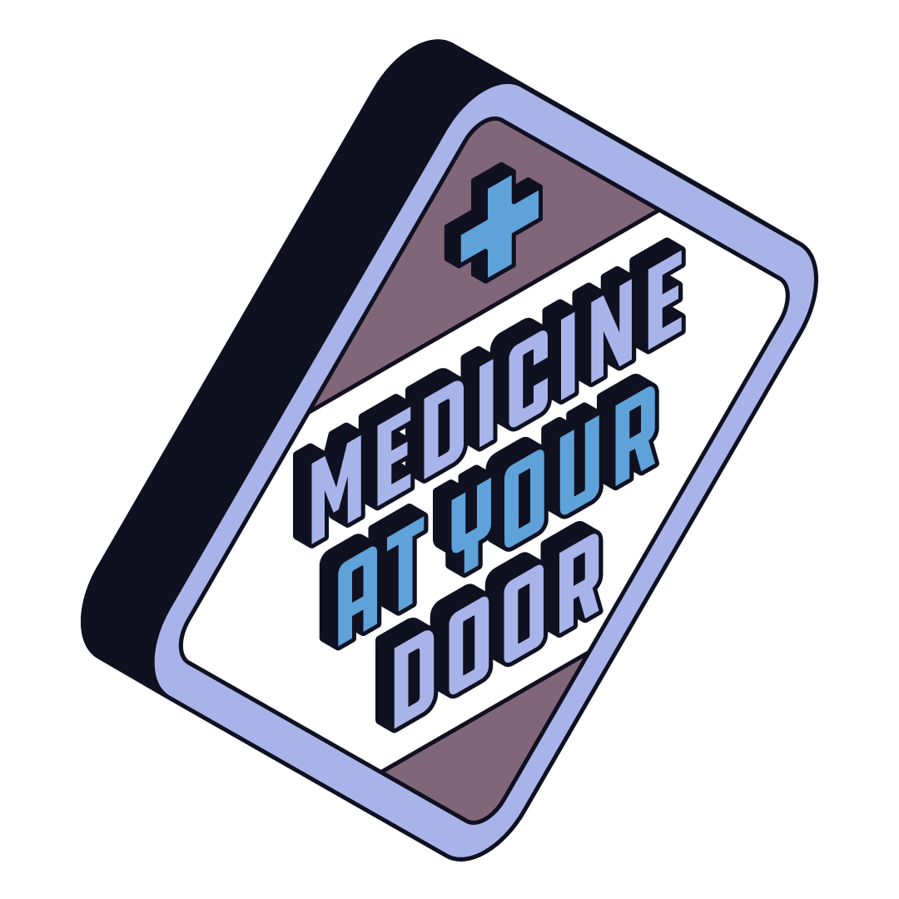

Student Health Hub: Wellness Resources for University Life
Mental Health
| Urgent Assistance |
| Service |
Contact Information |
| University Crisis Team |
Call: +44 (0) 141 330 4444 (ext. 4444) |
| Health Assured 24/7 |
Call: 0800 028 3766 |
| The Samaritans |
Call: 116 123 |
| Breathing Space Helpline |
Call: 0800 83 85 87 |
| Resource |
Description |
| Mind your mate workshop |
Mind Yourself training programme is a three-hour student-led workshop. The overall objective of this programme is to help participants develop basic suicide prevention skills. |
| Mind yourself workshop |
Mind yourself is a three-hour student-led workshop to help improve your mental health.
|
| Peer wellbeing support |
Peer Wellbeing Support is a confidential, student-led listening service. It allows students to talk and share their problems, and receive support from trained Peer Wellbeing Supporters. |
| Counselling and Psychological Services |
Counselling and Psychological Services offer a confidential space for you to explore and reflect on these issues without being judged, and to help you develop ways of overcoming your difficulties. |
| Look after yourself Guide |
"Look After Yourself" represents a campus-wide, student-driven initiative focused on promoting well-being through organized events and activities. It emphasizes the significance of mindfulness and implements various programs throughout the year, particularly during exam periods, to encourage taking breaks. |
| Glasgow University Nightline |
Nightline is a confidential telephone support and information service run for students, by trained student volunteers run by the Glasgow University SRC. Available Monday to Friday from 7pm till 7am during term time. You can contact them on +44(0) 141 334 9516. |
| Self-Help Resources UofG |
A vast list of resources including bereavement, addiction, and overall health and wellbeing. |
| Self-Help Guide NHSInform |
Guides are for anyone looking for tailored guidance on common ailments and treatments, for both physical and mental health. |
Wellbeing Support
| Resource |
Description |
| Disability Service |
If you have any disability or condition affecting your studies, the University's Disability can ensure that appropriate support is arranged for you during your time at UofG. This includes examination and study arrangements or additional funding from the Disabled Students' Allowance (DSA). |
| Sexual Violence or Harassment Support |
Support for individuals impacted by sexual violence or harassment. Students are encouraged to report the incident to the University. Following a report, a member of the First Responder team will make contact to provide support and discuss available options. |
| Sexual health |
If you have concerns about your sexual health, you can book an appointment online via NHSInform. You can also contact the the Sandyford sexual health service, which covers the Greater Glasgow area directly here.
|
| Free Sanitary Products |
Guide to where you can find free period products on the University of Glasgow campus. |
| SRC Advice Center |
The Advice Centre is an advice, information and representation service provided by the SRC for all University of Glasgow students.
|
| Safety & Security |
A guide put together by the SRC to ensure your safety on campus. |
| Health Scotland |
The National Health Board working to reduce health inequalities and improve population health in Scotland. Health Scotland has a number of resources for health issues. |
| Cost of Living Crisis Support |
A comprehensive guide containing a wide range of support to assist you with the challenges of the rising cost of living. |
Community
| Resource |
Description |
| SRC Clubs & Societies |
UofG has more than 300 societies and clubs that you can get involved in to meet like-minded people and find your community. |
| Student Events |
A page dedicated to all the events hosted by the SRC and societies to attend. |
| SRC Volunteering |
Volunteering is a great way to explore beyond Glasgow, contribute to your local community, and improve your wellbeing. |
| Glasgow University Union |
Glasgow University Union (GUU) is one of the largest and oldest students' unions in the UK, serving as a social space for students and alumni of the University of Glasgow since 1885. |
| Glasgow Univeristy Sports Association |
The Glasgow University Sports Association is a student-led body at the University of Glasgow dedicated to encouraging sports and physical activities throughout the campus. |
| Queen Margaret Union |
The Queen Margaret Union is one of two students' unions at the University of Glasgow, Scotland. Founded in 1890, it caters to the social and cultural needs of its members by providing a range of services including volunteering opportunities, entertainment, catering, bars and games |
Academic Support
| Resource |
Description |
| Student Learning Development |
Mind Your Mate training programme is a three-hour student-led workshop, developed in collaboration with Two Roads CIC; an award-winning not-for-profit social enterprise that develops and delivers training to improve emotional health and safety. |
| SRC Academic Support & Advice Center |
The SRC Advice Centre can offer advice and information on a number of University or study issues, whether you want to appeal against an exam grade or complain about an aspect of your course we can help.
|
| Writing Advice from a Royal Literary Fund Fellow |
RLF fellows are professional, published writers placed in universities throughout the UK to advise students on their academic writing. |